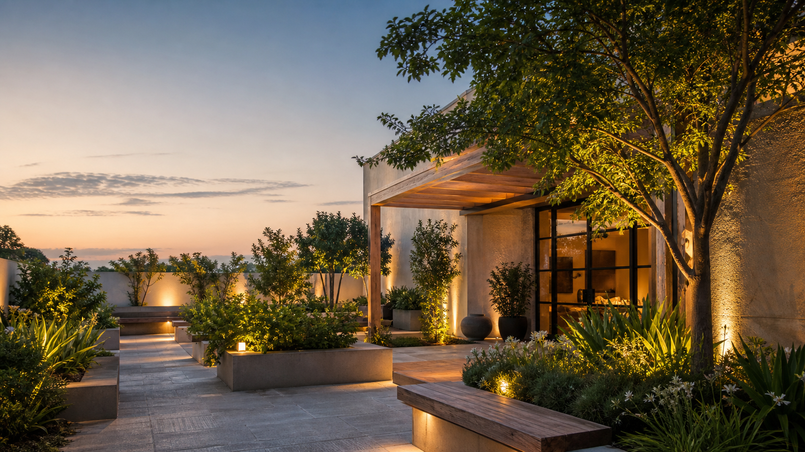

Evening patios
Warm paths, layered planting, and seating that keeps the night gentle.

Courtyard studio
Quiet outdoor rooms shaped by light, planting, and simple materials.
View spacesFeatured spaces
Warm paths, layered planting, and seating that keeps the night gentle.
Thresholds that feel clear, welcoming, and settled into the site.
Compact places for a bench, a book, and the last light of the day.
Open this week
Wednesday to Sunday, 4 PM to 8 PM. Walk-ins welcome.